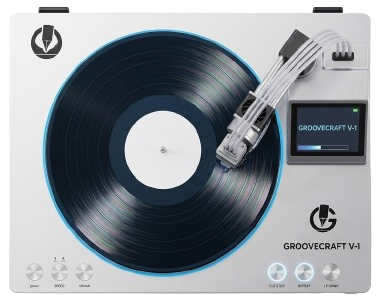
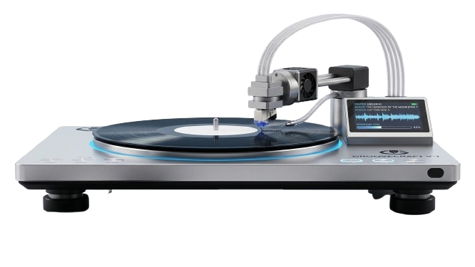

Grouve Craft
Grove Craft transforma la manera en que vivís la música. No es solo un reproductor de vinilos: es un estudio de grabación en tu propia casa. Grabá tus canciones favoritas, mixes personalizados o audios únicos directamente sobre vinilos vírgenes, y disfrutá luego de reproducirlos con una calidad de sonido cálida y auténtica. Una experiencia analógica pensada para quienes quieren crear, no solo escuchar. Grove Craft transforma la manera en que vivís la música. No es solo un reproductor de vinilos: es un estudio de grabación en tu propia casa. Grabá tus canciones favoritas, mixes personalizados o audios únicos directamente sobre vinilos vírgenes, y disfrutá luego de reproducirlos con una calidad de sonido cálida y auténtica. Una experiencia analógica pensada para quienes quieren crear, no solo escuchar.
01
Grabá tu propia música en minutos. Con un solo botón, Grove Craft convierte cualquier vinilo virgen en una pieza única, lista para sonar cuando quieras.
02
Reproducí tus discos de siempre con una fidelidad excepcional. La aguja de precisión de Grove Craft respeta cada detalle del sonido original.

03
Diseño compacto y elegante que se adapta a cualquier espacio de tu hogar, sin perder potencia ni calidad de audio.
04
Conectá tu celular o computadora por Bluetooth y grabá directamente desde tus plataformas favoritas, sin cables ni complicaciones.
Disponible Ahora
